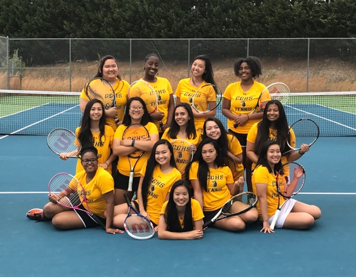

Talia Jackson
Talia Jackson's Personal Page
Girls Who Code!

Summer 2018, I am having my best time coding!
Central Gwinnett Varsity Girls Tennis!
Although I'm no good, I enjoy playing tennis!
A joke!
Why was six afraid of seven?
Talia Jackson
Summer 2018, I am having my best time coding!
Although I'm no good, I enjoy playing tennis!
Why was six afraid of seven?